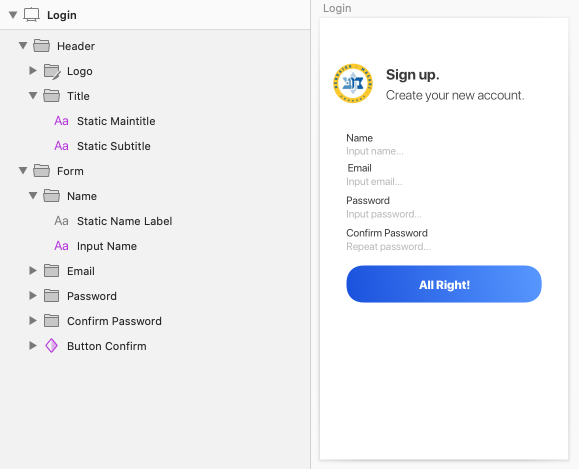
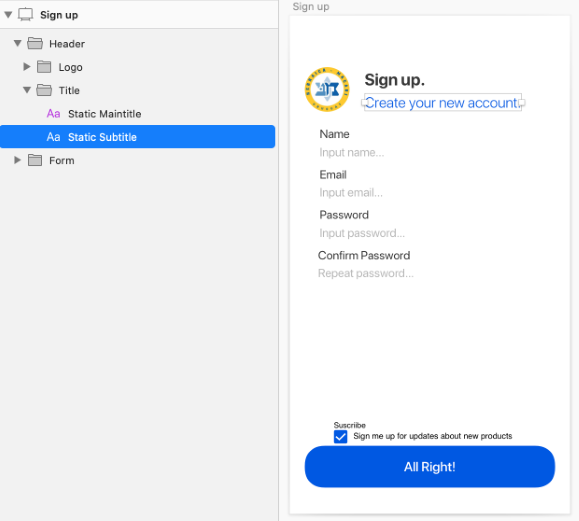

DesignOps - Best practices for designers
This article intends to be a guideline of best practices when designing apps for the GeneXus ecosystem. Developers will appreciate this!
Content
- Best practices
- Name layers
- Related elements
- Static vs. dynamic text content
- Reuse styles
- Reuse components
- User input and labels
- Define backgrounds
- Text layer with multiple formats
- Font formats
- Touch targets
- Availability
- Scope
- See also
Best practices
Name layers
Avoid default layer naming. Instead, describe what it is representing. Also, avoid extremely large names or names with non-alphanumeric characters (always start with alphabetical characters).
Example
| Do | |
| Don't |
Related elements
Group everything that should be together. A group will represent a table container for the controls you have defined.
Example
| Do | |
| Don't |
Static vs. dynamic text content
If the content you place in your design does not change, use Static convention.
Example
| Do |  |
| Don't |  |
Reuse styles
Avoid defining the appearance of each element in your design. Instead, try to define Styles for reusing them on multiple elements. Also, define Colors when you use the same color multiple times.
Example
| Do | |
| Don't |
Reuse components
Avoid making multiple copies of a group of elements in different Artboards / Top-Level Frames. Instead, conceptualize your groups and define Symbols / Components for them which should be overridden when necessary.
Example
| Do | Where the symbol defined by Button Confirm is as follows: . |
| Don't |  |
User input and labels
Labels for user input should be defined by the Static convention. If you have a complex control (e.g. radio-button), the label must be defined outside the group that contains the control drawing itself.
Example
| Do | |
| Don't |  |
Define backgrounds
A background layer must be defined by using colored Rectangles (Shape) or Images (exportable in case you want multiple resolutions). In both cases, the background item name must be suffixed with a "Background" substring.
Example
| Do | |
| Don't |
Text layer with multiple formats
Every formatted text-layer must have a single format (e.g. a single color) because GeneXus will set a single style-class for it. In case you start formatting substring, a single format will be taken into account. You should consider splitting a text-layer in case you require different formats.
Example
| Do |  |
| Don't |
Font formats
GeneXus support these font file formats: .ttf, .otf, .eot, .woff. Avoid using other formats in order to achieve a good-looking app at runtime.
In case your design has .ttc or .otc font files, refer to DesignOps - FAQ and Troubleshooting.
Touch targets
For mobile designs, every layer that can be touched by the end-user (e.g. buttons, edits, icons, etc.) must have at least 48x48dp of tappable area.
Check Android Material Design and Apple Human Interface Guidelines.
Availability
These sections apply as of GeneXus 17.
- As of GeneXus 17 upgrade 1:
- Color Variables are supported.
Scope
| Generators | .NET, .NET Core, Java, Android, Apple, Angular |
See also